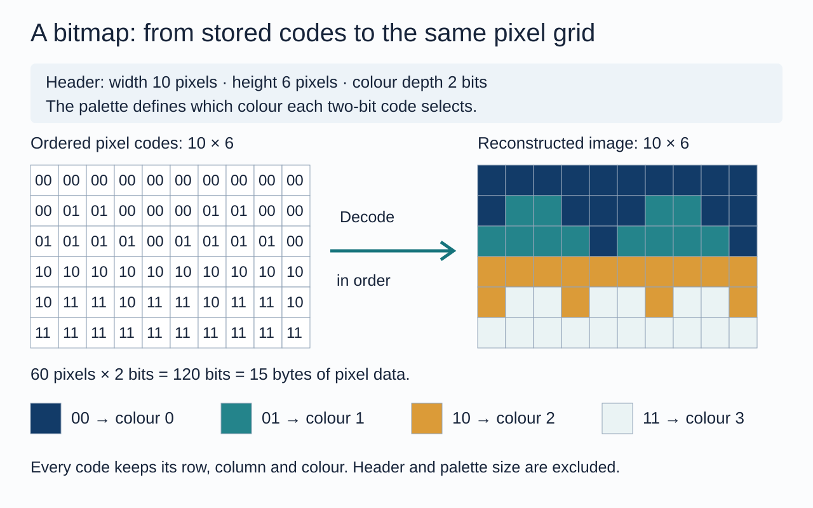

How a bitmap image is stored
Visual overview
Decode every pixel at its original position

Visual transcript
- A ten-column, six-row bitmap stores sixty two-bit pixel codes and uses a four-colour palette.
- Each decoded colour is placed at the same row and column as its stored code; both grids have exactly sixty pixels.
- The pixel data needs 120 bits or 15 bytes, excluding the header and palette.
Rebuild an image from ordered values
A bitmap stores an ordered rectangular grid of pixels. Each pixel is one position in that grid and has one selected colour value. The file stores codes for these values; a palette may map short codes to colours, or a format may store colour components directly.
Complete the code-to-pixel procedure
The supplied diagram is a 10-column, 6-row bitmap with two bits per pixel and a four-colour palette. Read row by row from the top left. The second row contains codes 00 01 01 00 00 00 01 01 00 00. Use the palette to replace each code with its colour while keeping its position. Repeating this for all six rows reconstructs the shown grid.
Explain why the metadata is needed
The header supplies information needed to interpret the data, such as width, height and colour depth. Here the width tells the reader to start a new row after every ten codes. The palette tells it which colour each code selects. A format can store other header information too; never assume every real header has the same fields or size.
Check the reconstructed data
There are 10 × 6 = 60 pixels, each needing two bits. The pixel data is 120 bits = 15 bytes. This count excludes the header and palette. The same 120 bits cannot be reconstructed correctly without the agreed dimensions, pixel order and colour mapping.
Core explanation · Exam essentials
- A bitmap contains an ordered pixel grid and the information needed to interpret it.
- Each pixel stores one colour value; its position matters.
- Distinguish pixel-data size from the complete file size.